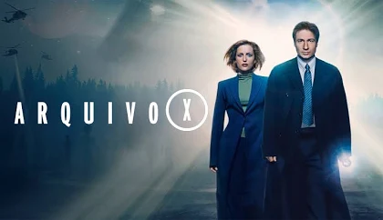
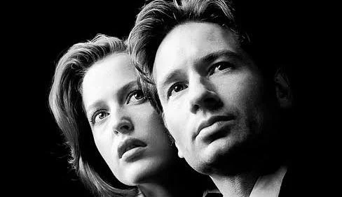
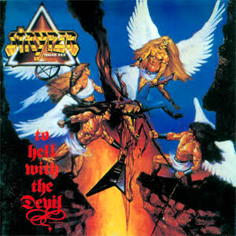
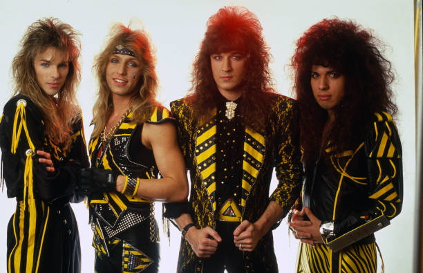
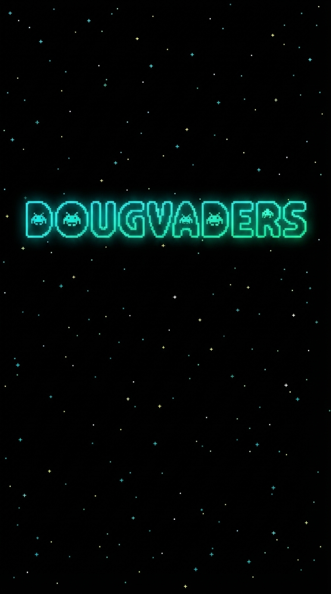
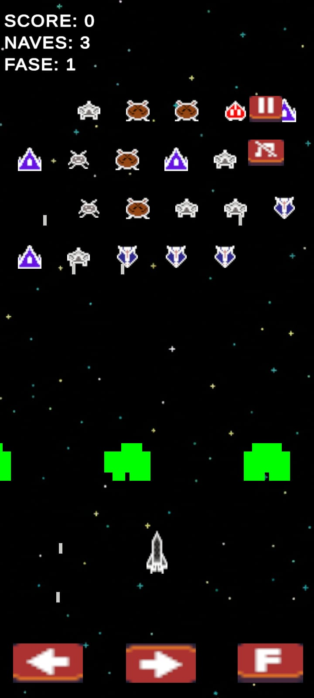

The X-Files (Brasil: Arquivo X / Portugal: Ficheiros Secretos) é uma série de televisão norte-americana de ficção científica criada por Chris Carter. A série foi exibida originalmente entre 10 de setembro de 1993 e 19 de maio de 2002, no canal norte-americano Fox, e em um reavivamento de duas temporadas adicionais exibidas entre 24 de janeiro de 2016 e 21 de março de 2018. Além da série de TV, dois filmes integram sua franquia: The X-Files, lançado em 1998, que ajuda a explorar a história maior narrada pela série e The X-Files: I Want to Believe, lançado em 2008, que serve apenas como um evento episódico.


Stryper é uma banda de metal cristão da Califórnia. Foi fundada no início da década de 1980 com o nome Roxx Regime pelo irmãos Robert (bateria) e Michael Sweet (vocais), acompanhados de Eric Johnson no baixo. C.C. DeVille (Poison) e Doug Aldrich foram guitarristas da banda nesse período. A banda logo alcançou sucesso devido ao seu estilo Glam Metal e letras com temática cristã (algo pouco difundido entre a cena metal da época). Uma demo foi gravada em 1982 como forma de divulgação da banda.

DOUGVADERS

Game baseado no classico space invaders(1978). Elaborado como trabalho acadêmico do curso de Tecnologia em Jogos Digitais pela Universidade Cruzeiro do sul
Assista ao Gameplay no YouTube ↗